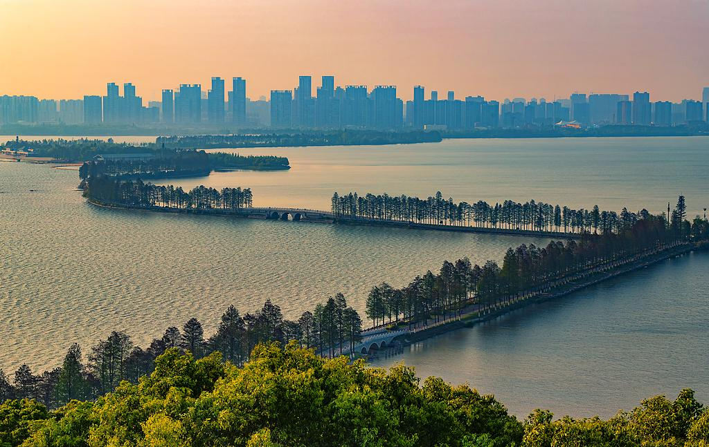

东湖风景区
票价：东湖风景区免费开放，但部分景点如磨山景区、落雁景区、东湖海洋世界等可能需要单独购票
开放：详情见下
电话：027-87510179
交通：可乘坐14、108、402、411、552、578、709路公交至梨园站下车;或者乘坐地铁8号线至梨园站
地址：湖北省武汉市武昌区沿湖大道16号
详情介绍:
武汉东湖风景区是中国最大的城中湖（水域面积33平方公里），国家5A级旅游景区，被誉为“江城绿心”。其以湖光山色、楚风汉韵、生态休闲为特色，由听涛、磨山、落雁、吹笛四大景区及东湖绿道串联，集自然景观、人文遗迹与都市活力于一体。
核心景区与特色:
听涛景区：东湖门户，含行吟阁（屈原纪念馆）、碧潭观鱼、长天楼，湖岸杉林成荫，湖心岛“湖光阁”可赏日出。
磨山景区：楚文化主题，仿古楚城、楚天台、朱碑亭沿山而建，樱花园（世界三大樱花园之一）春日万株樱花如云，梅园冬季暗香浮动。
落雁景区：生态湿地秘境，鹊桥、芦洲古渡、松鼠乐园点缀其间，观鸟栈道可拍摄白鹭、鸬鹚等百余种鸟类。
吹笛景区（马鞍山森林公园）：原始山林与湖泊交融，太渔桥日落、猴山喂猕猴、烧烤露营体验野趣。
东湖绿道：总长102公里，全球最长环湖绿道，分湖中道、郊野道等七段，可骑行、漫步，串联全湖景点。
文化底蕴:
楚文化地标：磨山楚城复现楚国街市、编钟乐舞表演；行吟阁陈列屈原与楚辞文化;刘备郊天坛、李白放鹰台遗址散落湖畔，见证三国与唐宋人文踪迹。
生态保护与科研价值:
落雁景区为国家级湿地公园，设有“东湖湿地科普馆”，展示沉水植物净化水质技术，定期举办生态导览，观察苦草、黑藻等“水下森林”修复成果。且记录鸟类218种，包括濒危物种青头潜鸭，观鸟爱好者可至白马洲、团山定点观测，冬季最佳。
小众秘境与网红打卡:
万国公园：荒废的欧式建筑群（金字塔、哥特风城堡）藏身郊野道，废墟美学吸引摄影爱好者。
东湖咖啡小镇：磨山南麓的彩色木屋群，汇聚各国风情咖啡馆，适合午后小憩。
东湖之眼摩天轮：13分14秒一圈的粉色轿厢，俯瞰全湖，夜间灯光浪漫，情侣必打卡。
游览建议：
经典路线：梨园广场→湖中道骑行→磨山楚城→乘缆车上楚天台。
东湖以其“山水相依、城湖共生”的格局，成为武汉“诗意栖居”的缩影，更是世界级城市生态旅游典范。东湖不仅是自然湖泊，更是融合生态、运动、艺术与市井烟火的超级城市IP。建议避开周末高峰，租一辆变速自行车，从听涛的晨曦划向落雁的晚霞，在“武汉后花园”里找到属于自己的诗意切片。
开放时间:
东湖绿道
开放时间：全天开放
东湖樱花园
开放时间：7:00-22:00。
东湖牡丹园
开放时间：7:30-18:00（17:00停止入园）。
东湖海洋世界
开放时间：9:00-17:00。
东湖磨山景区
开放时间：8:00-18:00。
东湖落雁景区
开放时间：8:00-18:00